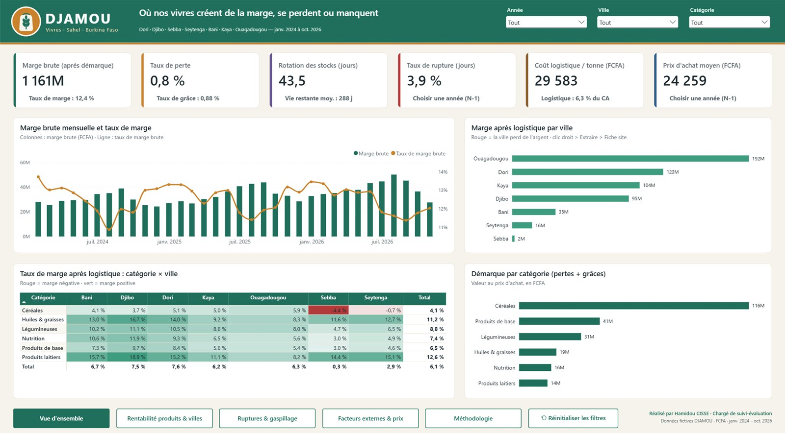
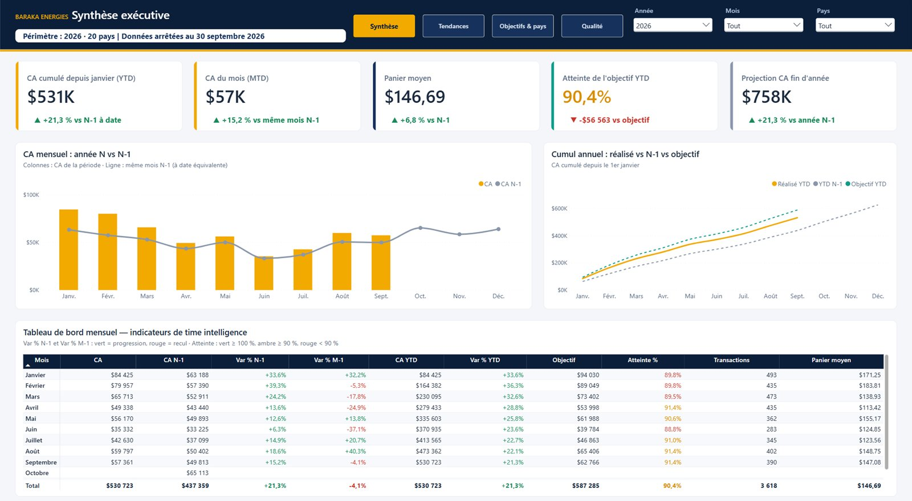

Des décisions éclairées
Je pars de votre question métier, pas des données. Chaque tableau de bord répond à la question : où agir en priorité ?
Marge, pertes, ruptures et objectifs visibles en un coup d'œil
Plus de 5 ans de collecte, de suivi d'indicateurs et de reporting sur le terrain, et des tableaux de bord Power BI qui disent clairement où vous gagnez, où vous perdez et quoi faire ensuite.
Postes visés Data AnalystAnalyste BI · Power BIChargé S&E · MEALFormateur data
Expérience sur des projets mis en œuvre avec
Un analyste qui comprend le terrain autant que les tableaux de bord, et qui livre des outils que vos équipes utilisent vraiment.
Je pars de votre question métier, pas des données. Chaque tableau de bord répond à la question : où agir en priorité ?
Marge, pertes, ruptures et objectifs visibles en un coup d'œil
Je conçois les formulaires de collecte avec contrôles et sauts logiques, et je vérifie les données avant qu'elles n'arrivent dans vos rapports.
Moins de nettoyage, des chiffres auxquels on peut se fier
Quand l'outil n'existe pas, je le construis : application hors ligne, modèle Excel, rapport automatisé. Et je forme vos équipes à s'en servir.
Des processus plus rapides, des équipes autonomes
Deux cas pratiques Power BI, puis trois réalisations issues de mon travail sur le terrain.

Ouvrir le dashboardRapport de 5 pages pour piloter un négoce de vivres dans 7 villes du Burkina Faso, de janvier 2024 à octobre 2026.
Quels produits et quelles villes créent de la valeur après la logistique, et où l'argent se perd-il en pertes et en ruptures ?

Ouvrir le dashboardDashboard de direction de 4 pages (Synthèse, Tendances, Objectifs et pays, Qualité des données) pour suivre le chiffre d'affaires au 30 septembre 2026.
Sommes-nous en avance sur l'an dernier et sur l'objectif, et où finira l'année ?
Prototype d'application pour cibler, assister et suivre les ménages vulnérables du Sahel, même sans réseau.
Collecte mobile pour prioriser les ménages vulnérables dans le projet RISE, au Burkina Faso.
Suivi de 30 ménages ayant reçu du sorgho et du niébé à Seytenga, campagne pluviale 2026.
La même démarche, que la donnée vienne d'un village ou d'un système de vente.
Je clarifie la décision à prendre et les indicateurs qui comptent pour vous.
Cadre de mesure · KPI
Je conçois une collecte fiable, sur mobile, même hors ligne.
KoboToolbox · ODK · application
Je nettoie, je modélise et je calcule des indicateurs justes et vérifiables.
Excel · Power Query · DAX
Je livre un tableau de bord clair et des recommandations prêtes à l'action.
Power BI · rapports
Sociologue de formation, j'ai passé plus de 5 ans au Conseil Régional des Unions du Sahel (CRUS) à cibler des ménages, superviser des enquêtes, suivre des indicateurs et rédiger des rapports pour les partenaires.
Aujourd'hui responsable des activités du projet RISE, je mets cette expérience au service de l'analyse de données.
Télécharger mon CVCRUS · Seytenga
690 ménages organisés en coopératives et AVEC. Suivi des semences et de la production pluviale, chèvres laitières, collecte et rapports, développement de l'application CRUS-SAME.
CRUS / PAM · Gorom-Gorom et Markoye
Ciblage et enregistrement des ménages, organisation des sites, contrôle des listes et rapportage.
CRUS · Dori
Suivi des indicateurs, consolidation des données et reporting des projets. Rédaction de microprojets (SD3C), contribution à l'éditorial régional sur la sécurité alimentaire (FAO, CARE).
CRUS · Dori
Supervision des distributions du PAM, documentation civile avec Save the Children, formations et groupements AVEC avec EDUCO.
CRUS · Dori · financement PBF
Ciblage de 450 agropasteurs (FAO), appui à la vaccination de 13 000 ruminants, suivi hebdomadaire de la transhumance sur KoBo/ODK pour l'OIM.
OIM · NRC · CARE · Children Believe · Réseau Billital Maroobé
Supervision d'enquêtes, analyse rapide genre, données IHEA, évaluation de projet, formation à KoBoToolbox.
Beaucoup savent faire un graphique. Je sais aussi d'où vient chaque chiffre, ce qu'il veut dire sur le terrain et comment l'expliquer à ceux qui décident.
Partager ce que je sais fait partie de mon métier. Pour une entreprise, c'est un analyste capable de rendre ses collègues autonomes.
Créer un formulaire, le déployer sur téléphone et récupérer les données.
Nettoyer, croiser et présenter les données dans un tableau de bord.
Modéliser, écrire ses premières mesures DAX et raconter avec les chiffres.
Modules en préparation, au rythme de ma propre formation.
BientôtI turn field and business data into clear decisions. Over 5 years of data collection, indicator tracking and reporting at the Regional Council of Sahel Unions (CRUS), on projects implemented with FAO, WFP, IOM and NRC. I build Power BI dashboards that show where an organization gains, loses and should act first.
Get in touch
Message on WhatsApp hamidoucisse904@gmail.comEnglish CV (Data Analyst) available on request.
Time zone: GMT (UTC+0) · Based in Dori, Burkina Faso
Appelez-moi ou écrivez-moi : je vous montre comment vos données peuvent vous faire gagner du temps et de l'argent.